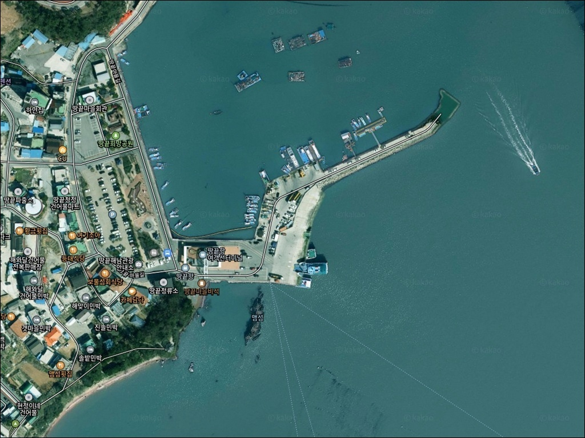
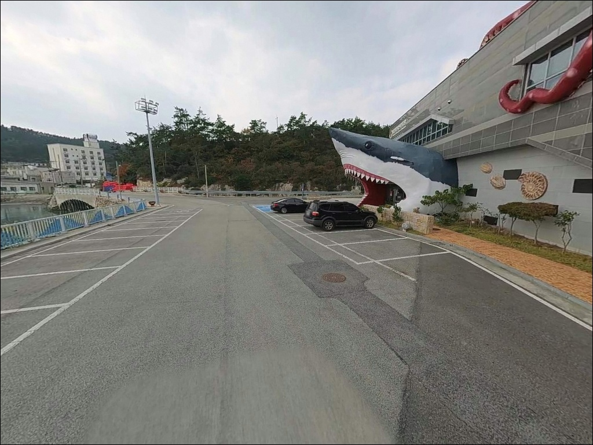
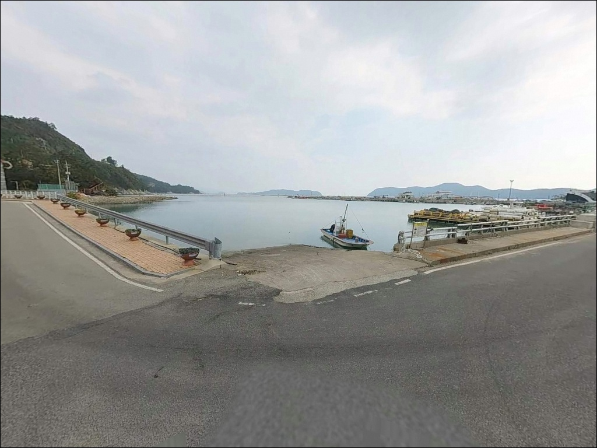
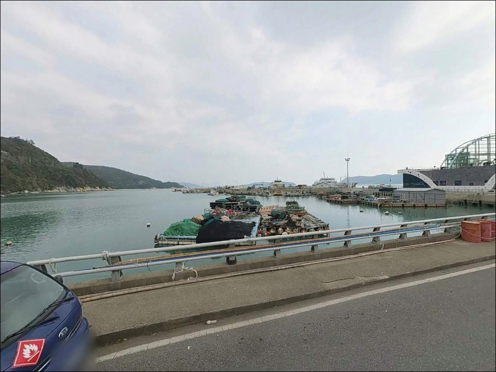
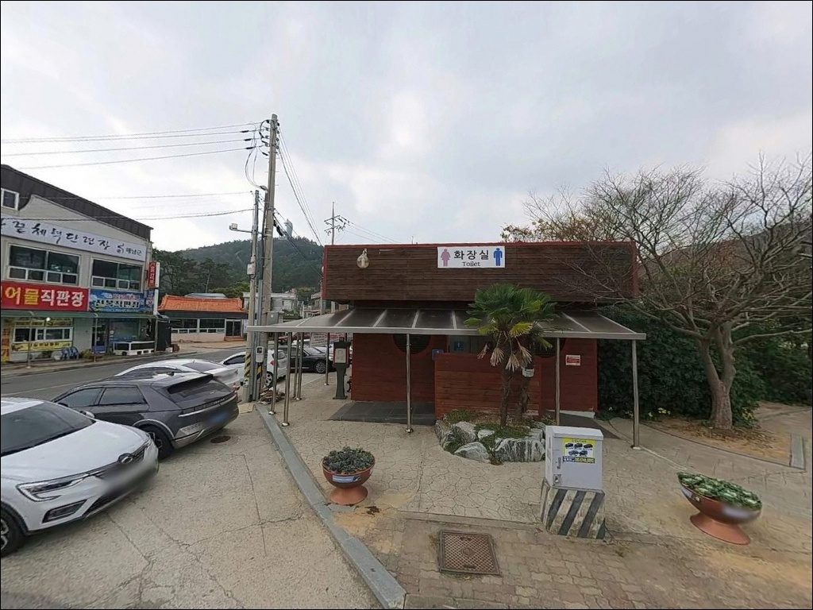
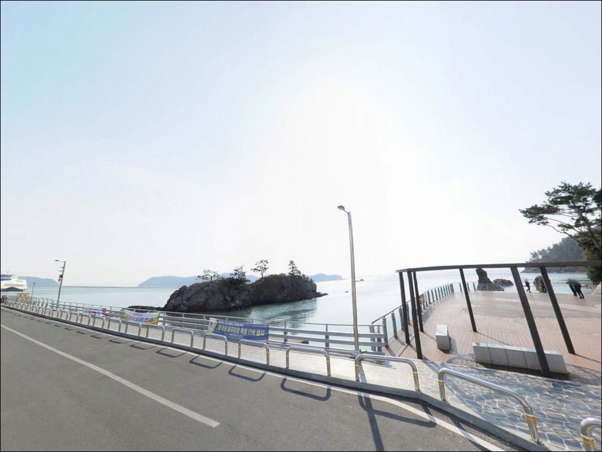
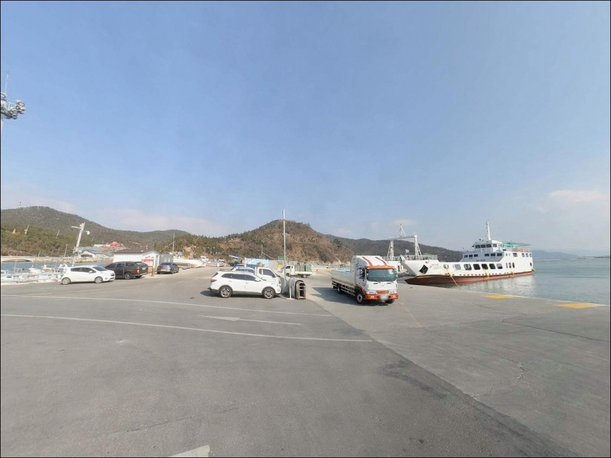
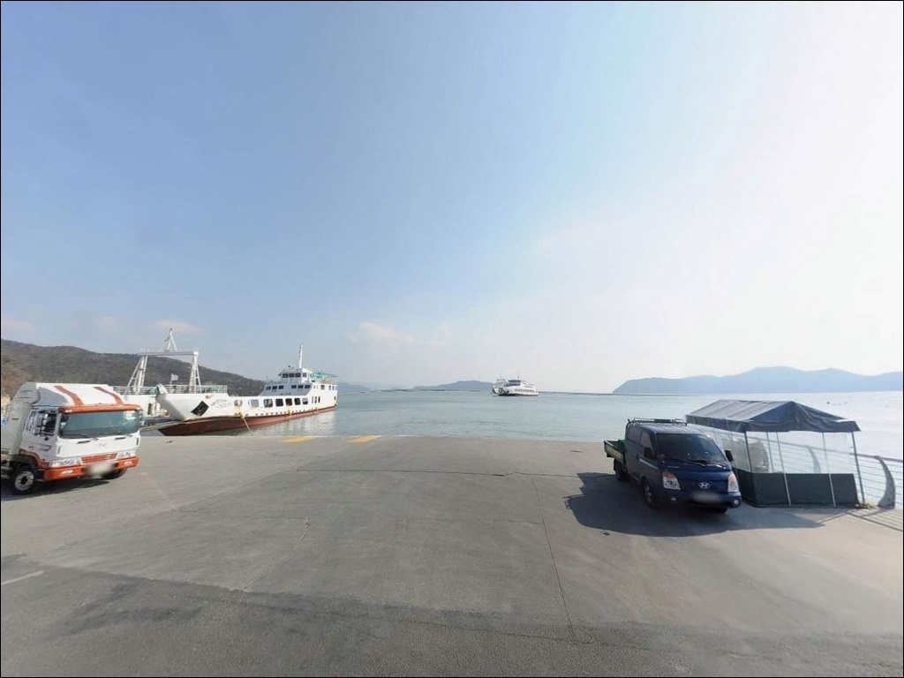
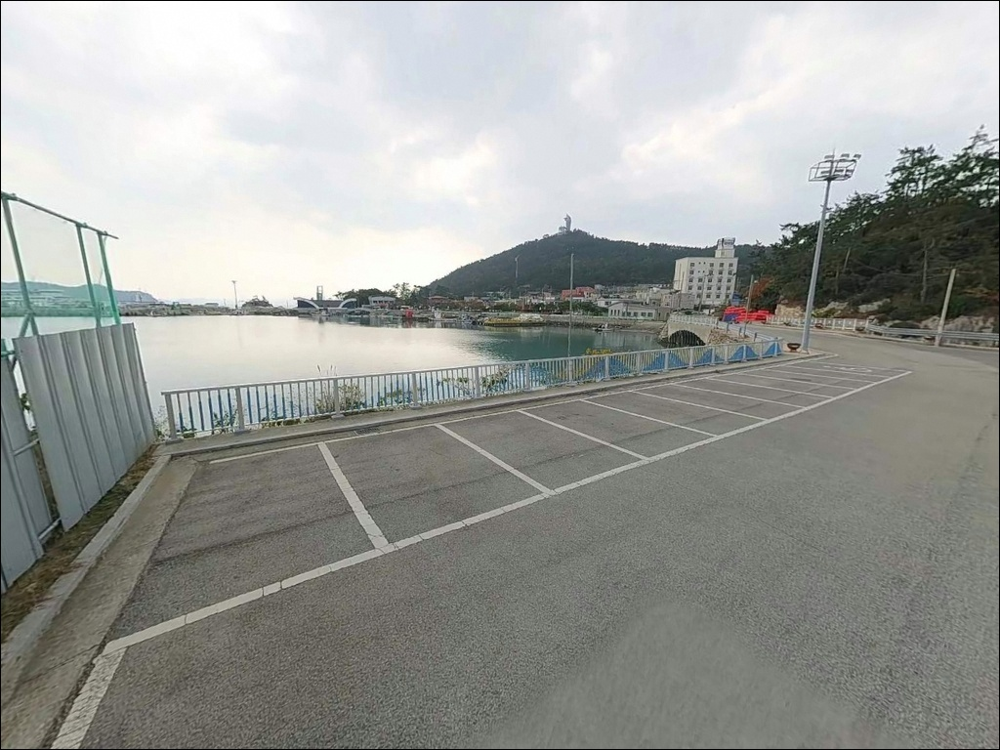

이 페이지에는 광고(제휴 링크 포함)가 있으며, 광고 링크를 통해 구매하면 운영자가 판매 수익 또는 수수료를 받을 수 있습니다. 포인트 사진: 카카오맵 스카이뷰·로드뷰. 이 페이지의 지도·사진 이미지는 카카오맵의 실제 서비스 이미지와 다를 수 있습니다.

땅끝항(갈두항, 갈두방파제)
전남 해남군 송지면 송호리 1310
물때 확인 없이 사리 전후에 진입하면
조류가 너무 강해
어떤 채비를 써도 바닥 탐색 자체가 불가능합니다.
땅끝항은 완도 방면 수로와 인접한 구조상
조류 세기가 입조 타이밍을 가르는 기준이
되는 포인트입니다.
한반도 최남단에 자리한 이곳은
보길도·노화도 방면 여객선이 오가는
항구 겸 방파제 낚시 포인트입니다.
외항 방파제 끝단의 깊은 수심과
꾸준한 조류 흐름은
감성돔·벵에돔 찌낚시의 지형 조건을
갖추고 있습니다.
이 글은 땅끝항(갈두방파제)의
진입 환경, 낚시 지형 조건, 낚시 스타일 적합성에 집중합니다.
조황 단정이나 특정 어종 보장은
이 글의 범위에 포함되지 않습니다.

해남읍에서 18번 국도를 따라 송지면 방향으로 내려오면
땅끝마을까지 포장도로가 이어집니다.
땅끝해안로를 따라 항구 방향으로 진입하는 구간은
관광지 접근로 규모로 조성되어 있어
경사 구간 없이 진입 가능한 도로 여건입니다.
터미널 광장과 뒤편 주차공간이 회차 여유를 갖추고 있어
대형 SUV나 캠핑 장비를 실은 차량도
진입과 회차에 큰 어려움은 없습니다.
여객선터미널 뒤편 무료 공영주차장이
주된 주차 공간이며,
방파제 입구 공원 인접 공간도 활용 가능한 구조입니다.
여객선이 오가는 선착장이라
선박 이동 시간대에는 방파제 일부 구간 진입이
제한될 수 있습니다.
낚시 자리 배치 전에 현장 표지를 먼저 확인하는 것이
기본 준비입니다.

땅끝항 일대는 관광지로 조성된 구역이라
가로등과 경관 조명이 설치되어 있습니다.
야간 시야 확보는 유리한 반면,
야간에도 관광 차량과 유동 인구가 있는 편이라
차박 프라이버시를 기대하기 어려운 환경입니다.
선착장 주변 주차 공간에서의 야간 체류는
주차 허용 여부를 현장에서 먼저 확인해야 합니다.
반경 3km 이내에
땅끝오토캠핑리조트와 땅끝황토나라테마촌이
공식 운영 중이므로,
낚시 당일 출조 베이스캠프로 연계하는 방식이
현실적인 차박 선택입니다.
차박이란 차량을 숙박 공간으로 활용하며
현장에서 하룻밤 머무는 여행 방식입니다.
관광지 차박 특성상
바람 방향과 파도 소음보다
주차 허용 여부와 야간 유동 인구를
먼저 판단 기준으로 삼아야 합니다.

땅끝항 여객선터미널 내에
화장실이 갖춰져 있으며,
터미널 뒤편 무료 공영주차장을 이용할 수 있습니다.
땅끝마을 구역 내에 음식점이 모여 있어
출조 전후 식사 해결에는
불편함이 적은 편입니다.
반경 3km 이내에
땅끝오토캠핑리조트(야영장·주차장·취사장·온수 샤워장)와
땅끝황토나라테마촌(오토캠핑장·글램핑·매점)이 운영 중입니다.
낚시 채비나 추가 소품이 필요하다면
해남읍 방면으로 나가야 하므로
채비는 출발 전에 완비해 두는 것이 기본입니다.
응급 상황 발생 시
해남읍내 의료 시설까지
거리가 상당한 편입니다.
비상약품과 충분한 수분은
출발 전에 미리 챙기는 것이 안전합니다.

땅끝항 방문 전 가장 먼저 확인할 것은
물때입니다.
완도 방면 수로와 인접한 구조상
사리 전후에는 조류가 매우 강해져
채비를 아무리 무겁게 만들어도
바닥을 잡기 어려운 상황이 됩니다.
바다타임에서 해남 기준 물때를 확인하고
조금 전후 또는 정조 전후를 노려
출발 시각을 정하는 것이 기본 전략입니다.
외항 방파제 테트라포드 구간은
발판이 고르지 않고 미끄럽습니다.
야간 낚시라면 헤드랜턴과 안전화 착용은
기본 준비이며,
구명조끼는 선착장과 방파제 끝단 모두 해당됩니다.
파도나 너울이 있는 날은
외항 진입을 피하는 판단이 먼저입니다.
방파제 외항 구간에 낚시 금지 표지가 있는 경우
현장에서 반드시 확인하고 준수해야 합니다.
여객선 접안 구역은 선박 이동이 우선이므로
선박 진입 시에는 낚시를 중단하고
안전 구역으로 이동하는 것이 매너입니다.

땅끝항 외항 방파제는
남해 방향으로 길게 뻗은 구조입니다.
방파제 끝단 수심은 깊게 형성되어 있어
조류 흐름이 살아 있는 타이밍에는
감성돔·벵에돔이 회유하는 지형 조건을 갖추고 있습니다.
석축과 테트라포드가 혼재한 외항 측은
구조물 틈새에 어류가 붙기 좋은 환경이기도 합니다.
내항은 여객선 정박 공간으로
수심이 얕고 완만한 편입니다.
파도 영향이 적어 잔잔한 수면 조건을 원할 때
보조 포인트로 활용하는 구간이며,
외항보다 조과 기대는 낮지만
초보자나 짧은 출조에 맞는 자리입니다.
조류가 세지는 사리 전후 시간대에는
어떤 방식도 채비 컨트롤이 어려워집니다.
정조 타이밍 전후 1시간을 집중 공략 구간으로 잡고,
그 이외 시간은 자리 탐색에 활용하는 방식이
이 포인트를 효율적으로 운용하는 방법입니다.
최신 조황은 출조 전에 반드시 검색해 확인하시기 바랍니다.

외항 찌낚시가 이 포인트 지형에 가장 잘 맞는 방식입니다.
방파제 끝단과 콧부리 구간에서
고부력찌를 활용해 수심층을 탐색하는 방식으로,
조류가 흐르는 정조 전후 타이밍에
감성돔과 벵에돔의 입질을 기대할 수 있습니다.
가을부터 겨울 사이가 이 두 어종의 시즌입니다.
원투낚시도 이 포인트 구조에 잘 맞습니다.
조류가 강한 시간대에는 무거운 봉돌을 써야
채비가 바닥에 머물 수 있는 구조입니다.
정조 타이밍에 외항 쪽으로 멀리 던져
붕장어·도다리 등 바닥 어종을 노리는 방식이
이 포인트의 원투 공략법입니다.
루어와 볼락 라이트게임은 야간 출조에 어울립니다.
석축과 테트라포드 틈새는
볼락·노래미 류가 붙기 좋은 구조입니다.
소형 지그헤드 웜으로 구조물 경계선을 천천히 탐색하는 방식이
야간 라이트게임에 적합합니다.
갑오징어 시즌에는 에깅도 병행해 볼 수 있습니다.

땅끝항이 조류가 너무 강하거나
관광객 혼잡으로 낚시 자리가 여의치 않을 때는
어란진항 방파제가 첫 번째 대안입니다.
약 7km 거리로 같은 해남 남단 해안선 권역이며,
서방파제 중심으로 원투낚시와 찌낚시를
모두 운용할 수 있는 구조입니다.
어란진항 인근 내장리방파제는
여름 시즌 원투낚시로
민어를 노리는 포인트로 알려져 있습니다.
땅끝항 출조가 여의치 않을 때
어란진항을 기점으로 삼고
내장리방파제를 병행 탐색하는 동선이
이 권역에서 가장 효율적인 이동 경로입니다.
차박 거점을 따로 잡으려면
반경 3km 이내에 있는
송호해수욕장 주차장이 대안이 됩니다.
넓은 주차 공간과 화장실을 갖추고 있어
낚시 출조를 마친 후 하룻밤 체류 거점으로
활용하기 좋습니다. 비수기 이용 가능 범위는 현장에서 확인하시기 바랍니다.

외항 찌낚시나 원투낚시를 즐기는 낚시인이라면
땅끝항의 지형 조건은 잘 맞는 구조입니다.
수심이 깊고 조류가 흐르는 외항 방파제는
감성돔·벵에돔 시즌에 가치가 있고,
정조 타이밍을 맞추면
바닥 어종 원투 공략도 가능합니다.
다만 사리 전후 조류가 강한 시간대에는
어떤 채비도 제 기능을 못 하는 상황이 생깁니다.
물때 확인, 진입 전 낚시 금지 구역 체크, 안전장비 준비,
이 세 가지가 이 포인트를 제대로 즐기기 위한
기본 조건입니다.
관광지 인프라가 갖춰진 덕에
편의 면에서 불편은 적지만,
차박은 인근 공식 캠핑장과 연계하는 편이 현실적입니다.
한반도 최남단 바다 앞에서 낚싯대를 드리우고
저녁을 맞이하는 출조라면,
물때 하나만 잘 맞춰도
기억에 남는 자리가 되는 포인트입니다.